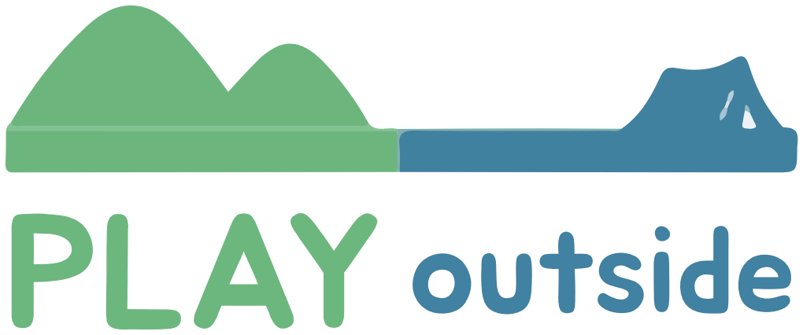

플레이아웃사이드
🧭 참여할 프로그램을 선택하세요!
🏕️ 지금 진행 중인 프로그램
⏳
프로그램 불러오는 중...
📍
위치 권한 확인 중...
잠시만 기다려주세요.
GPS 신호를 확인하고 있습니다.
📱 iPhone
🤖 Android
🔄
다시 확인하기
그래도 계속하기 (제한 모드)
🗺️
미션 시작!
이름과 전화번호 뒷자리를 입력하고
모험을 떠나보세요 🧭
이름
전화번호 뒷자리 4자리
🚀 시작하기
⚠️
이미 등록된 참가자
이전 기록 이어서 진행
다시 입력하기
미션
💡 힌트 이미지 보기
📷 사진으로 인증 (선택)
정답 입력
⭕
❌
틀렸습니다. 다시 시도해보세요.
확인
닫기
🎉
완료!
계속하기
⏰
시간 초과!
제한 시간이 종료됐습니다.
결과 확인
🚩
출발 지점
인증하기
닫기
출발
--:--
경과 시간
00:00
도착
--:--
0.00
km
-
m
-
km/h
--:--
도착
CP
0
/
0
완료
🆘
📍
🛰️ 위성
프로그램 이름
참가자 정보
0
/
0
완료 CP
00:00
경과 시간
대기
상태
📍 체크포인트
🏆 실시간 순위
일반
위성
기록
+
−